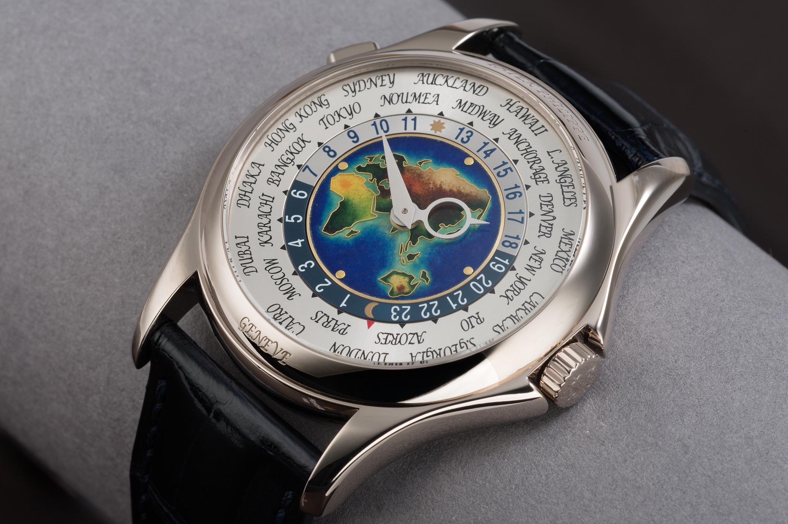
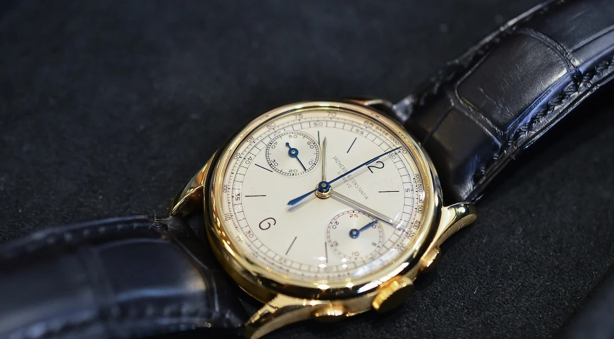
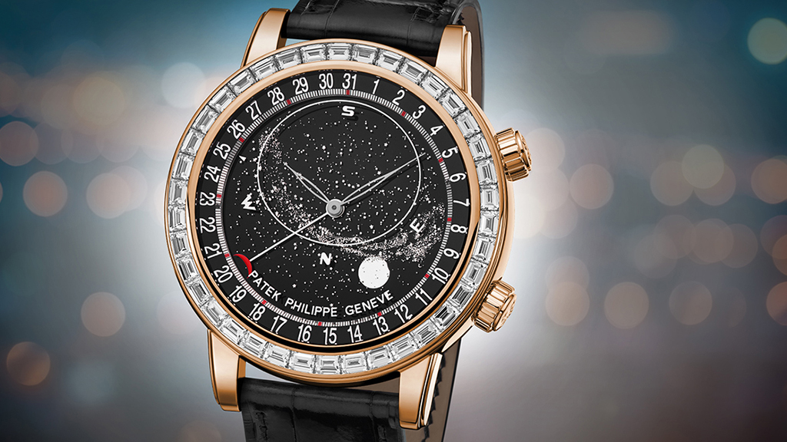

Patek Philippe Enamel "World Time"
Postoji mnogo različitih izdanja ovog sata, od kojih su mnoga jedinstvena. Dana 14. aprila 2002. model svetskog vremena
u platini iz 1946. godine postigao je cenu od više od 6,5 miliona CHF u Ženevi i tako uzeo rekord za najskuplji ručni sat prodat na aukciji.

Vacheron Constantin Vintage Chronograph
Vacheron Constantin SA je švajcarski proizvođač luksuznih satova i satova osnovan 1755. Od 1996. godine je podružnica švajcarske Richemont grupe.
Vacheron Constantin je jedan od najstarijih proizvođača satova na svetu sa neprekidnom istorijom izrade satova od svog osnivanja 1755. godine.

Patek Philippe "Celestial"
Ističući veliku tradiciju astronomskih satova kompanije Patek Philippe, Celestial svoj brojčanik posvećuje rotirajućoj karti nebeskih tela. U svakom
trenutku, njen vlasnik može da se divi tačnoj konfiguraciji noćnog neba na severnoj hemisferi, sa prividnim kretanjem zvezda i fazama i orbitom meseca.